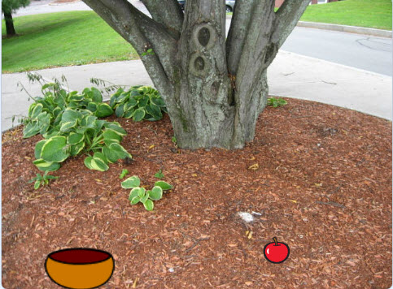
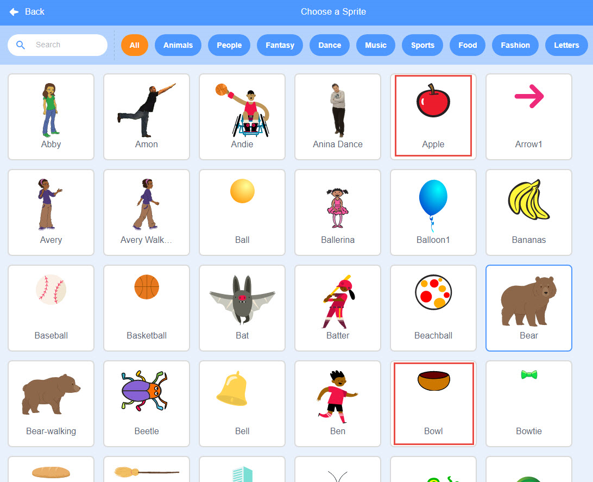
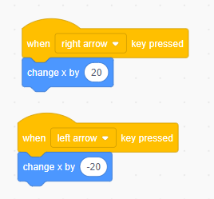
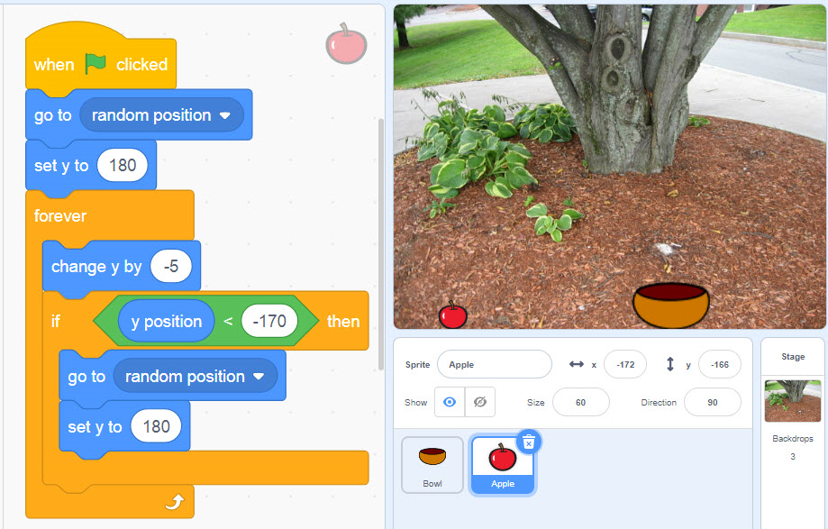

Hướng dẫn tự học lập trình scratch - Em làm game
Bây giờ, chúng ta hãy cùng làm 1 mini game trên scratch. Game chúng ta sẽ làm là game Hái táo phiên bản đơn giản với mô tả như sau:
- Khi bắt đầu chơi, những quả táo sẽ được rơi ngẫu nhiên từ trên xuống
- Nhiệm vụ của người chơi là di chuyển cái tô để hứng những quả táo rơi bằng phím mũi tên trái và phím mũi tên phải.
- Với mỗi quả táo hứng được, người chơi sẽ được cộng thêm 1 điểm.
- Bước 1: Phân tích bài toán
- Phân tích nhân vật: Trò chơi gồm hai nhân vật chính là quả táo và tô đựng táo hứng được.
- Phân tích dữ liệu/biến số: Trò chơi cần biến Score để lưu lại điểm của người chơi, chính là số táo người chơi hái được. - Bước 2: Chọn hình nền/backdrop
Chúng ta sẽ vào trong thư viện hình ảnh của Scratch và chọn cho mình một hình nền phù hợp để ứng dụng thêm sinh động, hoặc bạn cũng có thể search Google tìm một hình ưng ý và upload vào Scratch.

- Bước 3: Tạo nhân vật quả táo và tô đựng táo hái được
- Chúng ta vào thư viện hình của Scratch và lần lượt tạo 2 nhân vật quả táo và tô đựng táo hái được.

- Bước 4: Lập trình cho nhân vật ‘cái tô’
- “Cái tô” hái táo chỉ được phép di chuyển theo phương ngang, tức là di chuyển theo hệ trục Ox (hoành độ) mà thôi.
- Mỗi lần người dùng nhấn phím mũi tên trái và mũi tên phải, “cái tô” sẽ di chuyển tương ứng là 20 pixel.

- Bước 5: Lập trình cho nhân vật ‘quả táo’
Phân tích game chúng ta thấy quả táo cần được lập trình để táo có thể tự rơi từ trên cao xuống, táo sẽ biến mất khi chạm đất. Khi táo biến mất thì táo lại xuất hiện từ trên cao rơi xuống và cứ thế lặp lại cho đến khi người chơi dừng chơi.
Chúng ta sẽ diễn giải lại quan sát trên bằng giải thuật đơn giản như sau:

Cảm ơn các bạn đã đồng hành cùng khóa học của chúng tôi!
 136 Xuân Thủy, Cầu Giấy, Hà Nội
136 Xuân Thủy, Cầu Giấy, Hà Nội
 Hotline: 0961634531
Hotline: 0961634531
 hotrokythuat.scratch@gmail.com
hotrokythuat.scratch@gmail.com